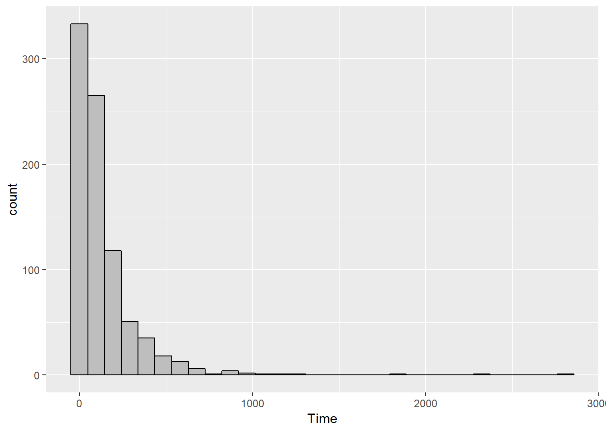
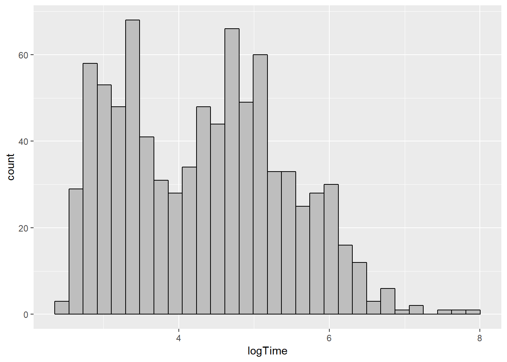
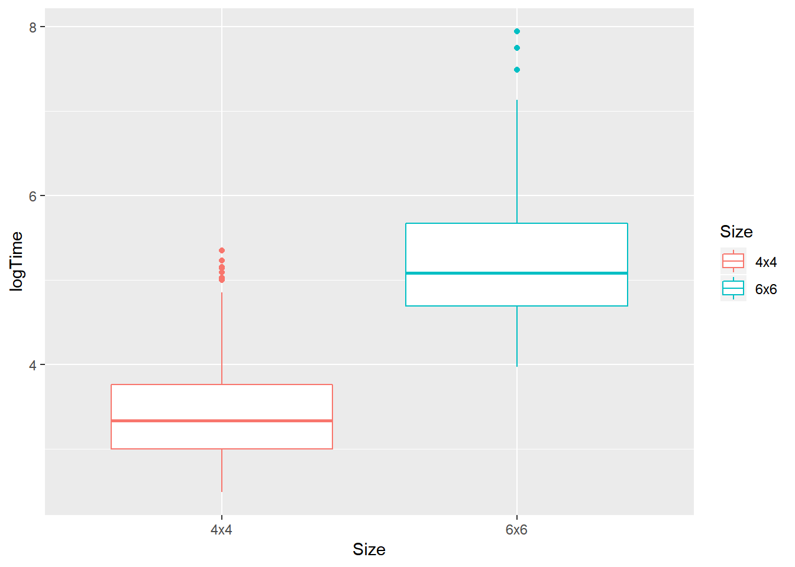
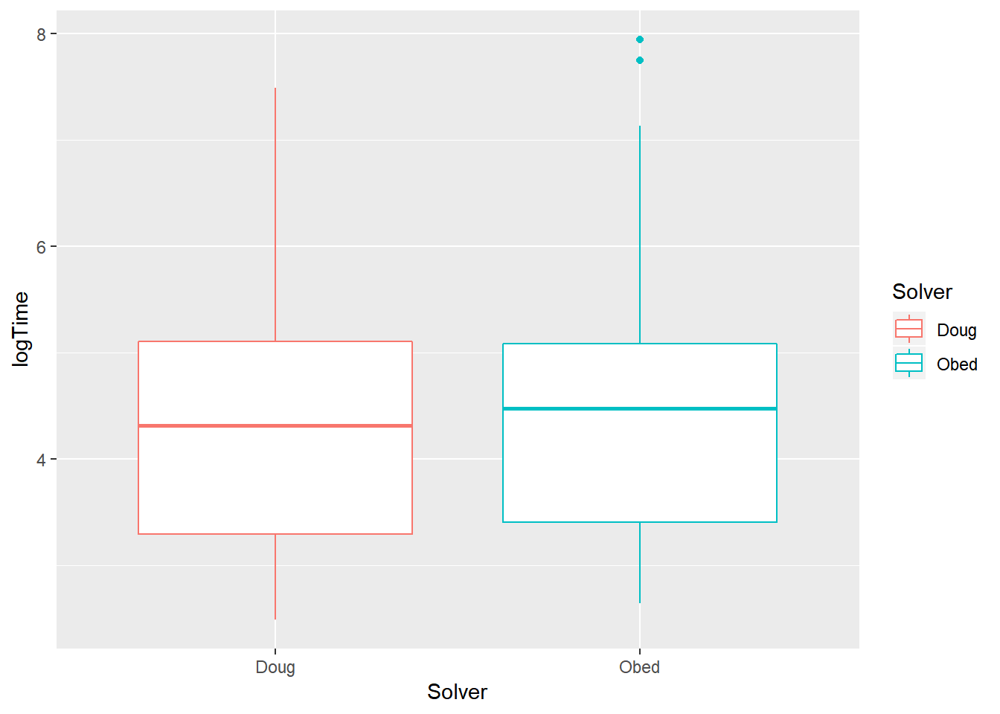
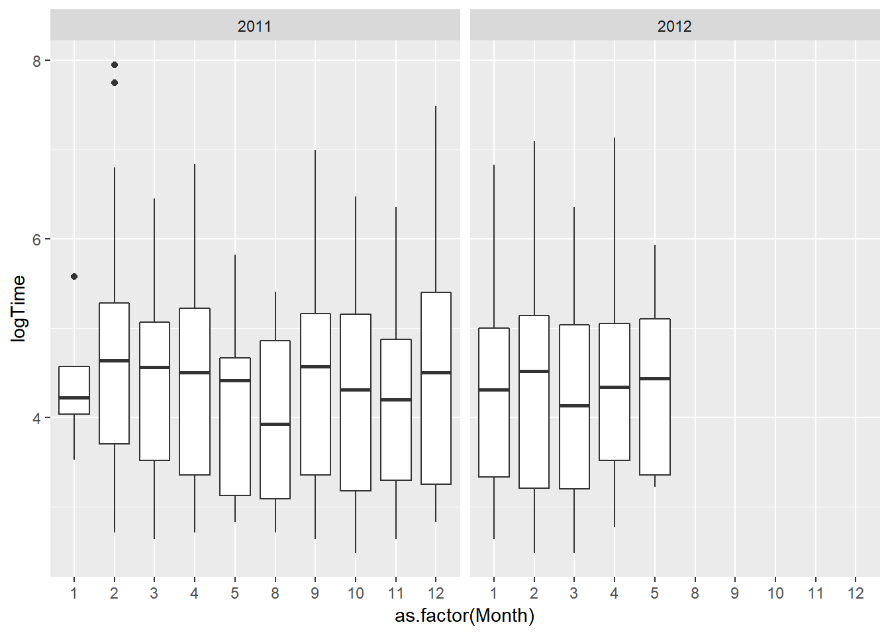

2 Part I - KenKen
2.1 Introduction
2.1.1 Topic
For a year and a half, Obed Lewis and I (D.Andrews) collected data on how long it took us to solve KenKen puzzles. At the time, we had access only to the two daily puzzles in the print version of the New York Times, which we could get only on weekdays while school was in session.
2.1.2 Data
In the KenKen subfolder are such data, in a tidy, “narrow” format. Each case is a combination of Puzzle, Solver, and Size. Below are the variables:
- Puzzle: This variable is somewhat misleadingly named. It’s really not an ID for a particular puzzle. Rather, it’s a chronological, sequential ID for the day in our study period on which a pair of puzzles appeared, from 1 = Mon 31 Jan 2011, to 213 = Wed 2 May 2012
- Day, Year, Month, Date: the day of the week, year, month, and calendar date on which the puzzles appeared
- Semester: 1 = Spring 2011, 2 = Fall 2011, 3 = Spring 2012
- Solver: Doug or Obed
- Size: 4x4 or 6x6 (grid of cells)
- Minutes, Seconds: These two combined give the total solution time, e.g., 3:12 is recorded as Minutes = 3 and Seconds = 12.
- Notes: reasons why we didn’t get a chance to do the day’s puzzles during the study period
2.2 Analysis
First, the following packages must be loaded before analyzing this dataset.
library(tidyverse)
library(readxl)
library(mosaic)
library(knitr)Next, I read in the data file and named it “KenKen”
KenKen <- read_excel("~/Data229/Project/KenKen/KenKen Solution Times for Obed and Doug.xlsx")2.2.1 Solution Time
Since the solution time was recorded as 2 variables (Minutes and Seconds), it might be a better idea to state the time in terms of seconds.
KenKen <- KenKen %>%
mutate(Time = Minutes*60 + Seconds) KenKen %>%
ggplot(size = 0.05) +
geom_histogram(mapping = aes(Time), na.rm = TRUE, color = "black", fill = "grey")FALSE `stat_bin()` using `bins = 30`. Pick better value with `binwidth`.
The distribution of solution times is strongly skewed to the right, so it might be easier to analyze by transforming the Time variable using a log transformation.
A new variable called log(Time) was created.
KenKen <- KenKen %>%
mutate(logTime = log(Time))ggplot(data = KenKen, size = 0.05) +
geom_histogram(mapping = aes(logTime), na.rm = TRUE, color = "black", fill = "grey")FALSE `stat_bin()` using `bins = 30`. Pick better value with `binwidth`.
kable(favstats(~ logTime, data = KenKen))| min | Q1 | median | Q3 | max | mean | sd | n | missing | |
|---|---|---|---|---|---|---|---|---|---|
| 2.484907 | 3.332205 | 4.369448 | 5.095279 | 7.944847 | 4.330372 | 1.090571 | 852 | 74 |
The distribution of solution log(Time) looks kind of normalish. The mean solution log(Time) is about 4.33 log seconds. The solution log(Time) varies from 2.485 log sec to 7.945 log sec.
2.2.2 Factors that affect the solution time
2.2.2.1 Puzzle’s Size
KenKen %>%
filter(!is.na(Size), !is.na(Time)) %>%
ggplot(mapping = aes(x = Size, y = logTime, color = Size)) +
geom_boxplot()
Looking at the boxplot, it is easier to recognize that overall, the mean log(time) to complete puzzles of size 4x4 is smaller than 6x6. So the size of the puzzle does have an impact on the solution time. In particular, the smaller the size is, the shorter time the solvers used.
2.2.2.2 Puzzle’s Solver
KenKen %>%
filter(!is.na(Solver), !is.na(Time)) %>%
ggplot(mapping = aes(x = Solver, y = logTime, color = Solver)) +
geom_boxplot()
Doug is the faster solver, since his mean log(time) is slightly less than Obed’s. But overall, the range of the two solvers’ log(time) are about the same. Obed’s solution log(Time) has 2 outliers.
2.2.2.3 Solving Day
KenKen %>%
filter(!is.na(Solver), !is.na(Time)) %>%
ggplot(mapping = aes(x = Day, y = logTime, color = Day)) +
geom_boxplot()
As the week goes by, the puzzle seems to get harder and harder, as the mean log(Time) increases throughout the week. Friday and Thursday’s mean log(Time) are the two highest among the 5 weekdays - about 6 log(Seconds). This means on those 2 days, it took longer to solve Ken Ken. On the other hand, the mean log(Time) on Monday and Tuesday are lowest, meaning that puzzles were easier and took a shorter time to solve.
2.2.2.3.1 Conclusion:
To sum up, 2 out of the 3 factors listed above have some impact on the solution time:
Size of the puzzle seems to have the biggest impact, as the mean log(Time) of 4x4 is way less than 6x6. The difference between the 2 means is very big, in particular the mean log(Time) for 6x6 is as high as 4x4’s max log(Time).
Day of the week also affects the solution time. On the first 2 days (Monday and Tuesday), the mean log(Time) are the least. Puzzle on those 2 days might be easier than the others and the solving times are quicker. In contrast, the last 2 weekdays (Thursday and Friday) have the greatest mean log(Time). Puzzles were tougher to solve on those 2 days.
Puzzle’s solver looks to be the only factor that have a tiny impact/ or even doesn’t affect the solution time. The 2 mean log(Time) are about the same (though Doug was a little bit faster than Obed). Everything else (range, IQR,…) also looks to be equal.
2.2.3 Did the solvers get faster?
KenKen %>%
filter(!is.na(Month), !is.na(logTime)) %>%
ggplot(mapping = aes(x = as.factor(Month), y = logTime)) +
geom_boxplot() +
facet_grid(.~ Year)
Overall, we can see that the solution time doesn’t have any particular trend. Over the course of the 3-semester period between 2011 and 2012, the mean log(Time) just keeps going up, and then down, and then up and down again, sort of like the graph of the sine curve. There were some months that the solution log(Time) is low, for example August 2011 and March 2012, meaning that those months are the fastest solving months. There were also months such as February 2011 and September 2011 where the solution times are the slowest.